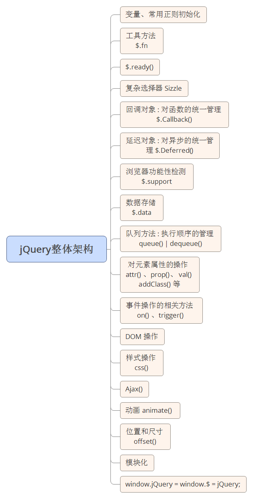

本身资历尚浅，无法深入对jQuery进行解读，而且网上也有很多jQuery的解读资料， 所以本篇文章只是作为我这几天所解读出来知识的总结（或者笔记...）
我觉得解读一个东西最主要的是找对思路，jQuery9000多行的源码代码要是逐字逐句 理解的话我想没有多少人能够坚持下来，而且开头的变量，正则和方法如果开始时绝对 很难理解。所以先了解jQuery的整体结构，从整体结构中去分析自己想要去解读的部分。 以下是我在网上找寻一张的jQuery的整体结构图:

jQuery 闭包结构及特色的调用方法
为了防止变量冲突和全局作用域污染，jQuery 的被包含在一个立即执行的函数构造的闭包中 ，只在后面暴露 $ 和 jQuery 这 2 个变量给外界，其写法为：
(function(window，undefined) {
// JS代码
})(window);
这里值得注意的是获取的参数有undefined，但却并没有传入undefined,其原因是在早期的运行 环境中（pre-ES5，eg. Internet Explorer 8），undefined 仅是一个变量且它的值是可以被覆盖的。 即你可以这样操作：
var undefined = 'qqq';
console.log(undefined); // 'qqq'
在我们实例化一个 jQuery 对象的时候，我们会发现无论是有无 new 构造都可以调用 jQuery 的方法
//无 new 构造
$('.n').next();
//有 new 构造
var n = new $('.n');
n.next();
大部分人使用的都是$('')的形式进行构造，当我们使用这种便捷的方式的时候，其本质上就相当于 new jQuery()， 而这种方法在jQuery 内部是如何实现的呢...
(function(window，undefined) {
var
//...
jQuery = function(selector,context){
//实例化方法 jQuery() 实际上是调用了其拓展的原型方法 jQuery.fn.init
//即你在调用 $() 的时候jQuery已经自动帮你 new 过了
return new jQuery.fn.init(selector,context,rootjQuery);
},
...
//jQuery.prototype既是jQuery的原型，挂载在上面的方法，即可让所有生成的jQuery对象使用
jQuery.fn = jQuery.prototype = {
//实例化方法，这个方法可以称作 jQuery 对象构造器
init:function(selector,context,rootjQuery){
//...
}
}
//最后这是最关键的一部
//通过原型链的传递，无论你有没有进行实例化jQuery它都能够准确的访问到对应的方法与属性
jQuery.fn.init.prototype = jQuery.fn;
})(window);
jQuery 方法的重载
相信用过 jQuery 的都知道 jQuery 的一个方法可以实现多种功能，例如：
// 获取 id标签上 style 属性的值
$('#id').attr('style');
// 设置 id标签上 style属性的值
$('#id').attr('style','值');
.
// 获取 css 某个属性的值
$('#id').css('width');
// 设置 css 某个属性的值
$('#id').css('width','200px');
这也算得上是jQuery的一个特色了，虽然这个使得源码阅读起来有点难懂，但不得不说这个功能确实挺好用的， jQuery 一共有着9种不同的方法重载场景：
// 接受一个字符串，其中包含了用于匹配元素集合的 CSS 选择器 jQuery([selector,[context]]) // 传入单个 DOM jQuery(element) // 传入 DOM 数组 jQuery(elementArray) // 传入 JS 对象 jQuery(object) // 传入 jQuery 对象 jQuery(jQuery object) // 传入原始 HTML 的字符串来创建 DOM 元素 jQuery(html,[ownerDocument]) jQuery(html,[attributes]) // 传入空参数 jQuery() // 绑定一个在 DOM 文档载入完成后执行的函数 jQuery(callback)